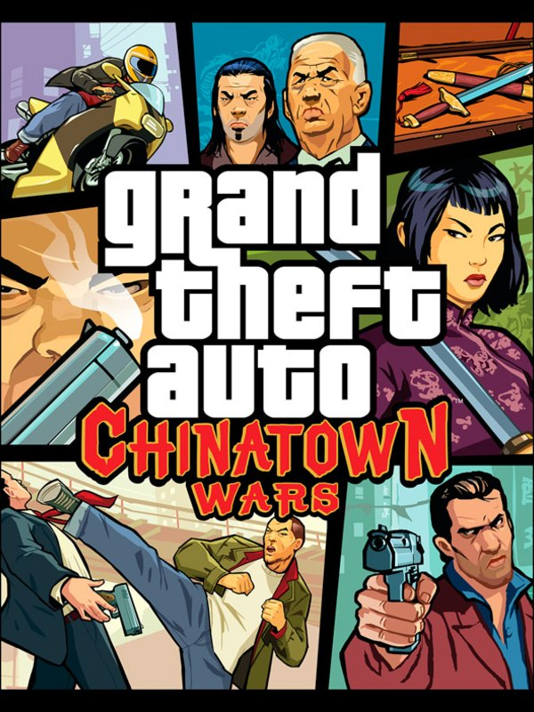

How to enter
Enter the combo during play.
Using a cheat turns off autosave. Reload a clean save afterwards.

Enter the combo during play.
Using a cheat turns off autosave. Reload a clean save afterwards.
Codes last checked against sources on .
Wrong or missing code? Use Report on the cheat, open an issue or send a pull request on GitHub. Each game is one JSON file.